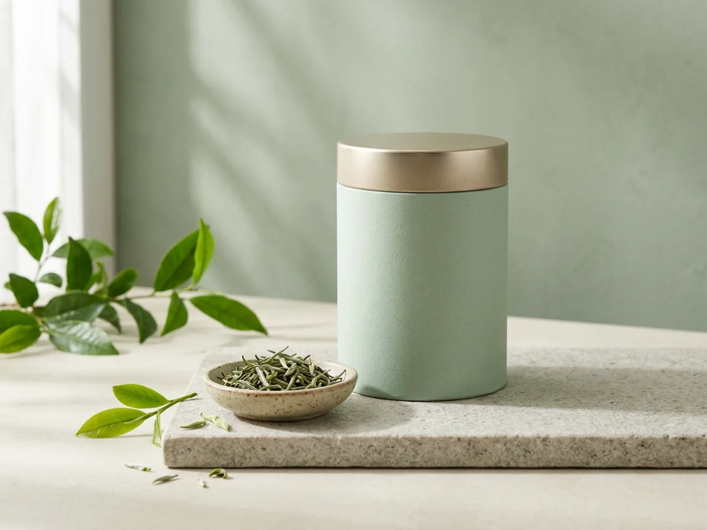
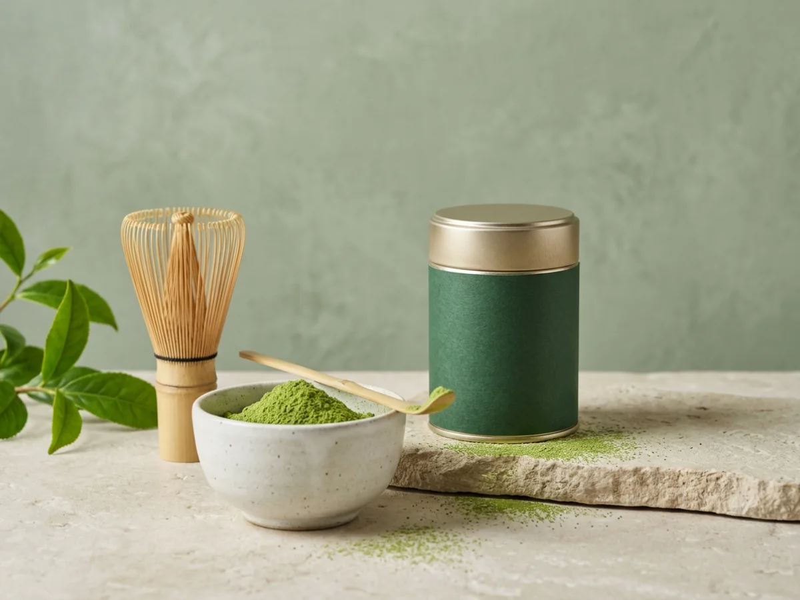
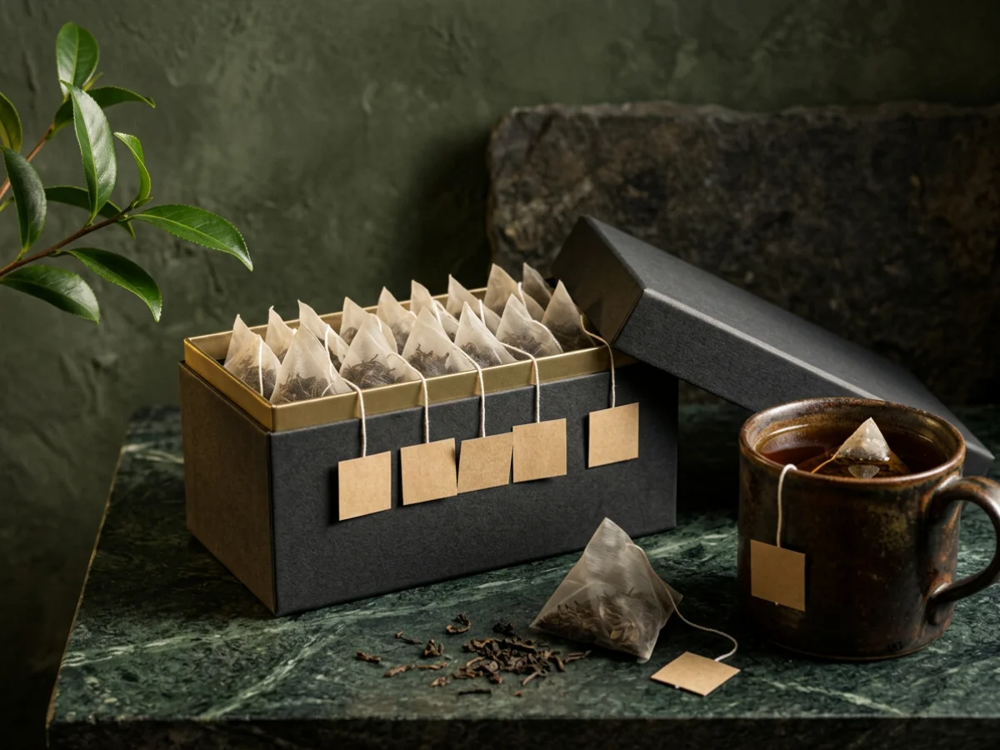
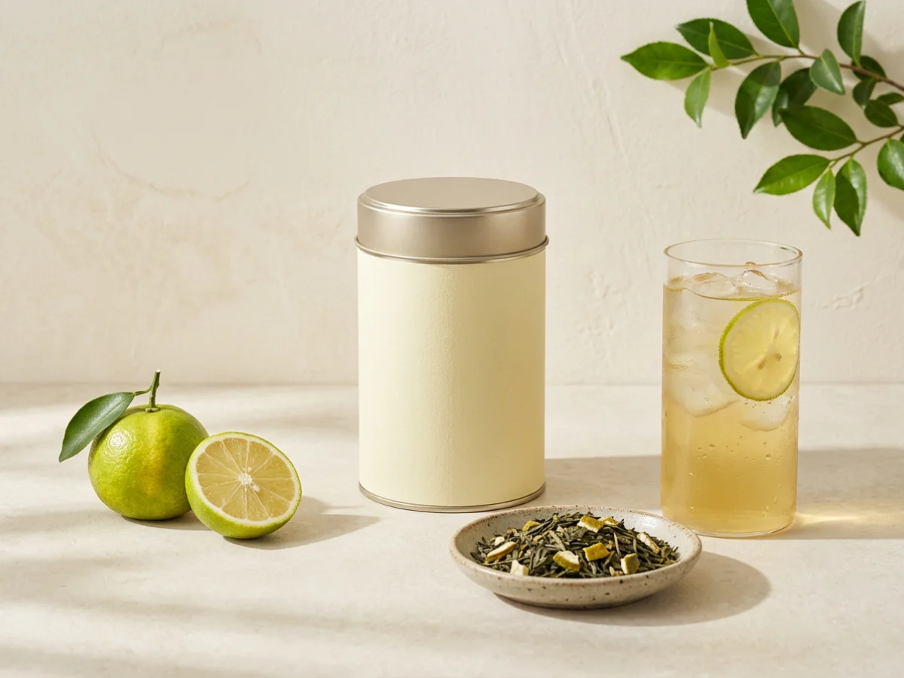
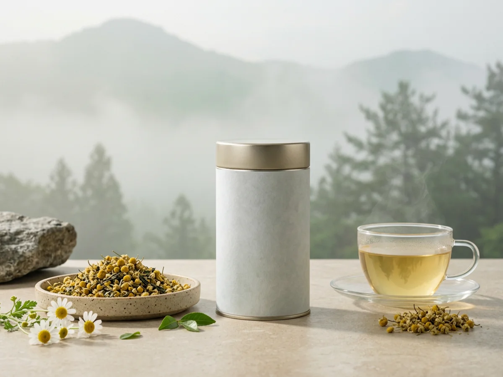
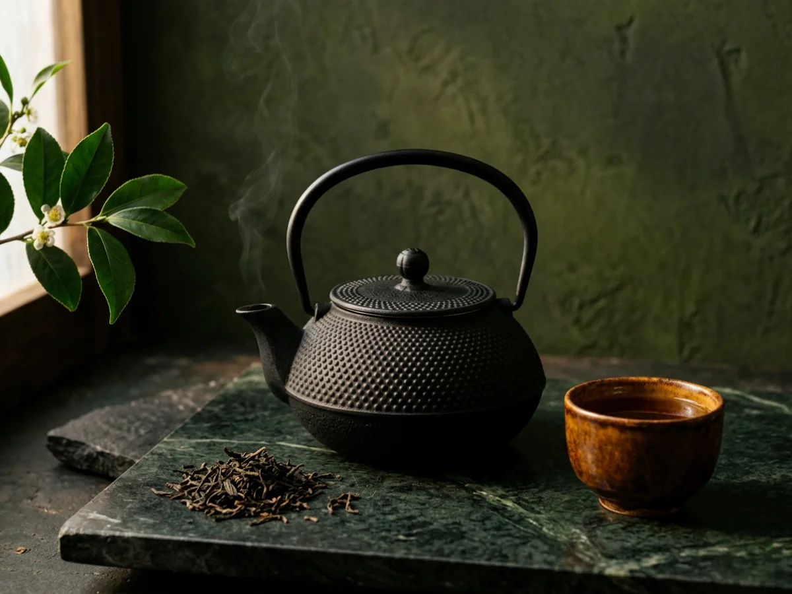
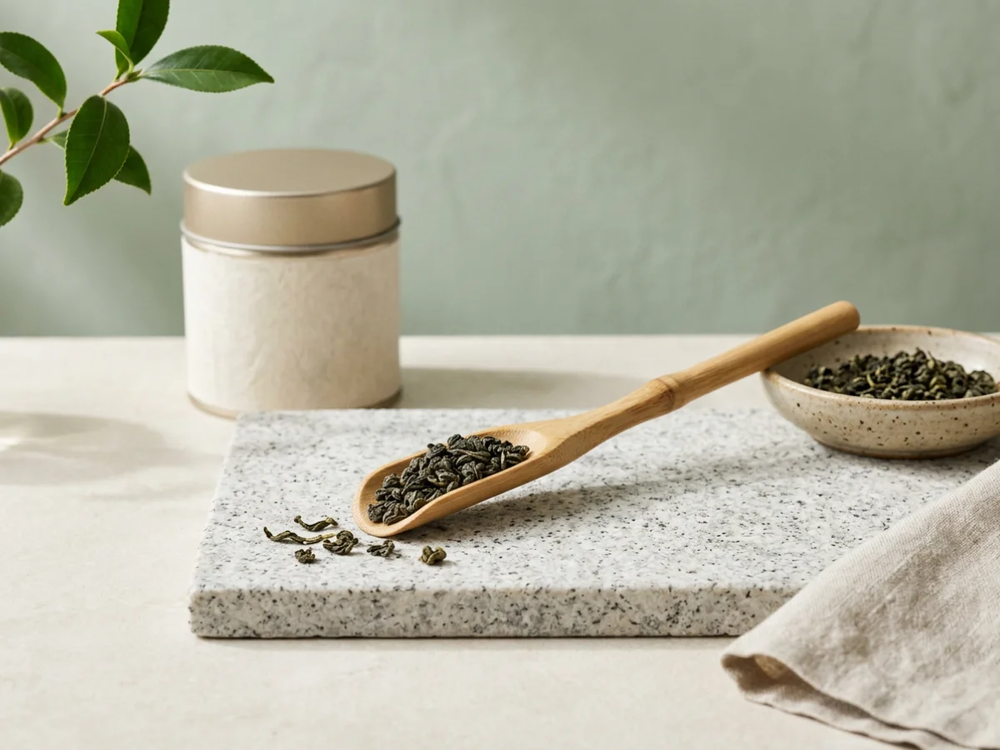

녹차
우전
곡우 전에 딴 첫 잎으로 만듭니다. 수확량이 적어 녹차 중 값이 가장 높습니다.
예시 가격 ₩42,000녹차·발효차·홍차·블렌디드 티 아홉 가지와 다구 세 가지를 소개합니다.
학습용 제품 구성과 목업 이미지입니다. 표시 금액은 용량·입수 기준을 정하지 않은 예시로, 실제 판매 가격이나 제품 간 가격 비교 기준이 아닙니다.
전체 — 12개 제품

녹차
곡우 전에 딴 첫 잎으로 만듭니다. 수확량이 적어 녹차 중 값이 가장 높습니다.
예시 가격 ₩42,000
녹차
곡우가 지나고 딴 어린 잎으로 만든 녹차. 매일 마시기에 무난합니다.
예시 가격 ₩24,000
녹차
잎을 통째로 곱게 갈았습니다. 우유에 타서 라떼로 마시거나 베이킹에 씁니다.
예시 가격 ₩18,000
발효차
삼나무 통에서 후발효시킨 차. 녹차보다 떫은맛이 적고 구수합니다.
예시 가격 ₩38,000
홍차
진하게 우러나서 우유를 넣어 밀크티로 마셔도 좋습니다.
예시 가격 ₩26,000
발효차
삼다연을 티백에 담았습니다. 머그잔 하나로 사무실에서 우리기 편합니다.
예시 가격 ₩16,000
블렌디드
동백꽃잎을 섞은 블렌디드 티. 꽃향이 강하지 않아 식후에 마시기 좋습니다.
예시 가격 ₩22,000
블렌디드
녹차에 제주 영귤을 더한 블렌드. 아이스티로 우려도 좋습니다.
예시 가격 ₩20,000
블렌디드
캐모마일에 녹차를 조금 섞었습니다. 카페인이 있어 늦은 밤보다는 저녁 식사 뒤에 권합니다.
예시 가격 ₩19,000
티웨어
찻물 색이 잘 보이는 넉넉한 백자 잔 2객.
예시 가격 ₩46,000
티웨어
무쇠라 물이 쉽게 식지 않아, 뜨거운 물로 우리는 발효차와 홍차에 잘 맞습니다.
예시 가격 ₩58,000
티웨어
대나무 스푼. 한 번 뜨면 한 잔 분량인 2g 정도입니다.
예시 가격 ₩12,000